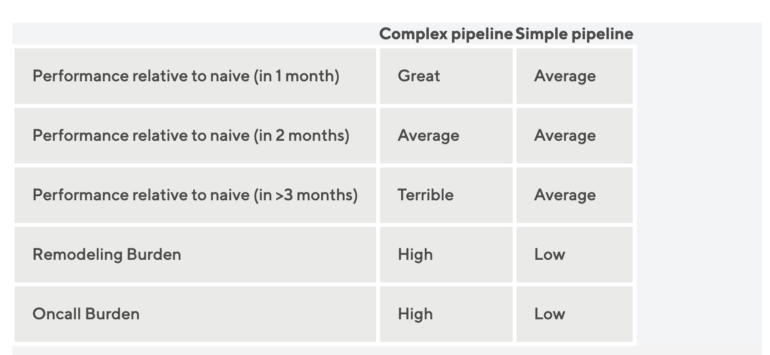
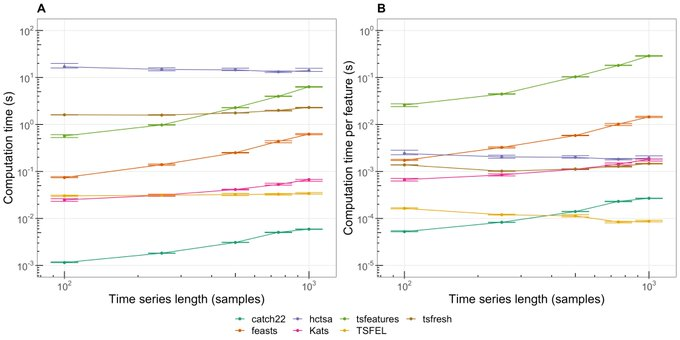

Time Series
Misc
Also see
Packages
- {timetk}
Incorporates tsfeatures package,
timetk::tk_tsfeaturesExample: Take weekly dataset and compute tsfeatures for each quarter
new_dat <- dat %>% mutate(date_rounded = lubridate::round_date(date, "quarter")) %>% group_by(date_rounded) %>% timetk::tk_tsfeatures( .date_var = date, .value = price, .features = c("median", "frequency", "stl_features", "entropy", "acf_features"), .prefix = "tsfeat_" ) %>% ungroup()- .features is for specifying the names of the features from tsfeatures that you want to include
- .prefix is the prefix for the newly created column names
- date_rounded is a column that has the date for each quarter
- {{pytimetk}} - Python version of {timetk}
- {{temporian}} - Similar to {{pytimetk}}
- {timetk}
Resources
- Feature Engineering A-Z, Ch. 38 Datetime, Ch. 112 Time Series
Issue: Features that aren’t available during the forecast horizon aren’t useful.
- Solutions:
- But you can use a lagged value of predictor or an aggregated lagged value e.g. averages, rolling averages, tiled/windowed averages
- Example: average daily customers for the previous week.
- Some features are one value per series, but the functions could be fed a lagged window (length of horizon?) of the whole series and generate a value for each window.
- But you can use a lagged value of predictor or an aggregated lagged value e.g. averages, rolling averages, tiled/windowed averages
- Solutions:
Difference features that are really linear or have little variation. Change in value can be more informative
Forecasting shocks is difficult for an algorithm
- It can better to smooth out (expected) shocks (Christmas) in the training data and then add an adjustment to the predictions during the dates of the shocks.
- The smoothed out data will help the algorithm produce more accurate predictions for days when there isn’t an expected shock.
- Examples of shocks that may need training data to have manual adjustments and not be smoothed by an algorithm
- one-time spikes due to abnormal weather conditions
- one-off promotions
- a sustained marketing campaign that is indistinguishable from organic growth.
Models with large numbers (100s) of features increases the opportunity for feature drift
Outliers: An indicator variable can also be used to account for an outlier in the data. Rather than omit the outlier, an indicator variable removes its effect. (FPP 3, 7.4)
Intervention Variables (FPP 3, 7.4)
e.g. competitor activity, advertising expenditure, industrial action
If the effect is only for one period, use a one hot encode called a spike variable which is equivalent to a indicator variable for handling an outlier
If the effect causes a level shift (i.e., the value of the series changes suddenly and permanently from the time of intervention), then use a “step” variable.
A step variable takes value zero before the intervention and one from the time of intervention onward.
See EDA, Time Series >> Seasonality and Trend >> Level Changes in Trend
{kind=link}
Tranformations
- Logging a feature can create more compact ranges, which then enables more efficient neural network training
- Log before differencing (SO post)
- Box-Cox Transformation
- {forecast::BoxCox and InvBoxCox} can be used to auto-transform and back-transform
- {forecast:: BoxCox.lambda} performs both Guerrero and Log Likelihood versions for finding lambda manually
- {actfts::acfinter} performs both Guerrero and Log Likelihood versions among other tests
- Lambda Guidelines
- 1: No transformation.
- 0: Natural logarithm.
- 0.5: Square root.
- 2: Square.
- -1: Inverse.
- Lambda Guidelines
step_normalize(all_predictors)- Actually standardizes the variables
- If you’re using predictors on different scales
- lm (and AR) are scale invariant, so not really necessary for those models
- Smoothing
- LOESS (LOcally WEighted Scatter-plot Smoother)
Weights are applied to the neighborhood of each point which depend on the distance from the point
A polynomial regression is fit at each data point with points in the neighborhood as explanatory variables
Some robustness to outliers (by downweighting large residuals and refitting)
span: the distance from each data that considered the neighborhood is controlled by this argument
- Default: 0.75
- < 1: the value represents the proportion of the data that is considered to be neighbouring x, and the weighting that is used is proportional to 1-(distance/maximum distance)3)3, which is known as tricubic
- Choosing a value that’s too small will result in insufficient data near x for an accurate fit, resulting in a large variance
- Choosing a value that’s too large will result in over-smoothing and a loss of information, hence a large bias.
degree: degree of the polynomial regression used to fit the neighborhood data points
- Default: 2 (quadratic)
- High degree: provides a better approximation of the population mean, so less bias, but there are more factors to consider in the model, resulting in greater variance.
- Higher than 2 typically doesn’t improve the fit very much.
- Lower degree: (i.e. 1, linear) has more bias but pulls back variance at the boundaries.
Example: {ggplot}
ggplot(data, aes(x = time, y = price)) + geom_line(alpha = 0.55, color = "black") + geom_smooth(aes(color = "loess"), formula = y ~ x, method = "loess", se = FALSE, span = 0.70) + scale_color_manual(name = "smoothers", values = c("ma" = "red", "loess" = "blue"))Example: base r
loess_mod <- stats::loess(price ~ time, data = dat, span = 0.05, degree = 4) dat$loess_price <- fitted(loess_mod)
- Cubic Regression Splines
- Also see Feature Engineering, Splines >> Misc >> Use Cases for Spline Types
- Example: {mgcv}:
mgcv::gam(price ~ s(time, bs = "cs"), data = data, method = "REML")$fitted.values
- LOESS (LOcally WEighted Scatter-plot Smoother)
Engineered
- Misc
- Packages
- {IndexNumberTools} - Provides indexing functionalities like chain-linking, base shifting or computing pyp indices.
- Tidymodels
- date variable needs to be role = ID for ML models
- Packages
Decimal Date
recipe::step_date(year_month_var, features = c("decimal"))
Calendar Features
Calandar Variables
Day of the month, day of the year, week of the month, week of the year, month, and year
Using {lubridate} to add calendar features in a tsibble will create an ordinal variable (source)
ts$month <- lubridate::month(ts2$index, label = TRUE) head(tsj) #> # A tsibble: 292 x 8 [1M] #> index date y series_id trend fit1 res1 month #> <mth> <date> <int> <chr> <int> <dbl> <dbl> <ord> #> 1 2001 Jan 2001-01-01 2505011 NUS 1 1557525. 947486. Jan #> 2 2001 Feb 2001-02-01 2156873 NUS 2 1560686. 596187. Feb #> 3 2001 Mar 2001-03-01 2086568 NUS 3 1563847. 522721. Mar #> 4 2001 Apr 2001-04-01 1663832 NUS 4 1567008. 96824. Apr #> 5 2001 May 2001-05-01 1385163 NUS 5 1570169. -185006. May- This was effective in modeling seasonality in a simple regression model
Hour of the week (168 hours/week)
Minute, hour
Morning/afternoon/ night
Example: {fable} Linear Regression (source)
fit_beer <- recent_production |> model(TSLM(Beer ~ trend() + season())) report(fit_beer) #> Series: Beer #> Model: TSLM #> #> Residuals: #> Min 1Q Median 3Q Max #> -42.90 -7.60 -0.46 7.99 21.79 #> #> Coefficients: #> Estimate Std. Error t value Pr(>|t|) #> (Intercept) 441.8004 3.7335 118.33 < 2e-16 *** #> trend() -0.3403 0.0666 -5.11 2.7e-06 *** #> season()year2 -34.6597 3.9683 -8.73 9.1e-13 *** #> season()year3 -17.8216 4.0225 -4.43 3.4e-05 *** #> season()year4 72.7964 4.0230 18.09 < 2e-16 *** #> --- #> Signif. codes: 0 '***' 0.001 '**' 0.01 '*' 0.05 '.' 0.1 ' ' 1 #> #> Residual standard error: 12.2 on 69 degrees of freedom #> Multiple R-squared: 0.924, Adjusted R-squared: 0.92 #> F-statistic: 211 on 4 and 69 DF, p-value: <2e-16- For a simple regression model, you want to use dummies instead of one-hot
seasonautomatically takes care of creating the dummies from a tsibble
-
example_data <- tibble(date = Sys.time() + 9 ^ (1:10)) recipe(~ ., data = example_data) |> step_date(all_datetime(), features = c("year", "doy", "week", "decimal", "semester", "quarter", "dow", "month")) |> step_time(all_datetime(), features = c("am", "hour", "hour12", "minute", "second", "decimal_day")) |> prep() |> bake(new_data = NULL) |> glimpse() #> Rows: 10 #> Columns: 15 #> $ date <dttm> 2023-12-07 11:46:02, 2023-12-07 11:47:14, 2023-12-07… #> $ date_year <int> 2023, 2023, 2023, 2023, 2023, 2023, 2024, 2025, 2036,… #> $ date_doy <int> 341, 341, 341, 341, 342, 347, 31, 108, 77 155 #> $ date_week <int> 49, 49, 49, 49, 49, 50, 5, 16, 11, 23 #> $ date_decimal <dbl> 2023.933, 2023.933, 2023.933, 2023.933, 2023 .935, 202… #> $ date_semester <int> 2, 2, 2, 2, 2, 2, 1, 1, 1, 1 #> $ date_quarter <int> 4, 4, 4, 4, 4, 4, 1, 2, 1, 2 #> $ date_dow <fct> Thu, Thu, Thu, Thu, Fri, Wed, Wed, Fri, Mon, Fri #> $ date_month <fct> Dec, Dec, Dec, Dec, Dec, Dec, Jan, Apr, Mar, Jun #> $ date_am <lgl> TRUE, TRUE, TRUE, FALSE, TRUE, FALSE, FALSE, FALSE, F… #> $ date_hour <int> 11, 11, 11, 13, 4, 15, 20, 18, 13, 19 #> $ date_hour12 <int> 11, 11, 11, 1, 4, 3, 8, 6, 1, 7 #> $ date_minute <int> 46, 47, 58, 35, 10, 23, 22, 11, 34, 59 #> $ date_second <dbl> 2.890565, 14.890565, 2.890565, 14.890565, 2 .890565, 1… #> $ date_decimal_day <dbl> 11.76747, 11.78747, 11.96747, 13.58747, 4 .16747, 15.3… modeltime::step_timeseries_signaturecreates a similar set of calendar features
Daylight Savings - At one point in the year, we have 23 hours in a day, and in another time, we have 25 hours in a day
- If using a
smooth::adammodel, then it shifts seasonal indices, when the time change happens. All you need to do for this mechanism to work is to provide an object with timestamps to the function (for example, zoo).
- If using a
Leap Year
- Becomes less important when we model week of year seasonality instead of the day of year or hour of year
Holidays
-
# Sample Data dates_in_2017_tbl <- tibble::tibble( index = tk_make_timeseries("2017-01-01", "2017-12-31", by = "day") ) # Add US holidays and Non-Working Days due to Holidays # - Physical Holidays are added with holiday pattern (individual) and locale_set rec_holiday <- recipe(~ ., dates_in_2017_tbl) %>% step_holiday_signature(index, holiday_pattern = "^US_", locale_set = "US", exchange_set = "NYSE") bake(rec_holiday_prep, dates_in_2017_tbl) #> # A tibble: 365 × 21 #> index index_exch_NYSE index_locale_US index_US_NewYearsDay #> <date> <dbl> <dbl> <dbl> #> 1 2017-01-01 0 1 1 #> 2 2017-01-02 1 0 0 #> 3 2017-01-03 0 0 0 #> 4 2017-01-04 0 0 0 #> 5 2017-01-05 0 0 0 #> 6 2017-01-06 0 0 0 #> 7 2017-01-07 0 0 0 #> 8 2017-01-08 0 0 0 #> 9 2017-01-09 0 0 0 #> 10 2017-01-10 0 0 0 #> # ℹ 355 more rows #> # ℹ 17 more variables: index_US_MLKingsBirthday <dbl>, #> # index_US_InaugurationDay <dbl>, index_US_LincolnsBirthday <dbl>, #> # index_US_PresidentsDay <dbl>, index_US_WashingtonsBirthday <dbl>, #> # index_US_CPulaskisBirthday <dbl>, index_US_GoodFriday <dbl>, #> # index_US_MemorialDay <dbl>, index_US_DecorationMemorialDay <dbl>, #> # index_US_IndependenceDay <dbl>, index_US_LaborDay <dbl>, …Indicators for holidays based on locales
Indicators for when business is off based on stock exchanges
-
As splines
Also see Feature Engineering, Splines >> Misc >> Use Cases for Spline Types
Example: {tidymodels}
step_mutate(release_year = year(release_date), release_week = week(release_date)) %>% step_ns(release_year, deg_free = tune("deg_free_year")) %>% step_ns(releas_week, deg_free = tune("deg_free_week"))May need lubridate loaded for the mutate part
Can also use a basis spline (step_bs)
Example: {mgcv}
.png)
ctamm <- gamm(temp ~ s(day.of.year, bs = "cc", k=20) + s(time, bs = "cr"), data = cairo, correlation = corAR1(form = ~1|year))From pg 371, “Generalized Additive Models: An Introduction with R, 2nd Ed” (See R/Documents/Regression)
Highly seasonal so uses a cyclic penalized cubic regression spline for “day.of.year”
10 peaks and 10 valleys probably explains “k = 20”
With regression models, you have to be careful about encoding categoricals/discretes as ordinal (i.e. integers). Linear regression does not model non-monotonic relationships between the input features and the target while tree models do.
- For example, the raw numerical encoding (0-24) of the “hour” feature prevents the linear model from recognizing that an increase of hour in the morning from 6 to 8 should have a strong positive impact on the number of bike rentals while a increase of similar magnitude in the evening from 18 to 20 should have a strong negative impact on the predicted number of bike rentals.
- Options
- One-hot encoding for small cardinality (e.g. hours) and binning for large cardinality features (e.g. minutes)
- Spline tranformation
- Reduces number of features with comparable performance to one-hot
- Period isn’t used, just here (examples) for reference to the number of splines chosen
- num_knots = num_splines + 1
- Degree 3 was used in the sklearn tutorial
- SKLearn also has an extrapolation=“periodic” arg
- “Periodic splines with a periodicity equal to the distance between the first and last knot are used. Periodic splines enforce equal function values and derivatives at the first and last knot. For example, this makes it possible to avoid introducing an arbitrary jump between Dec 31st and Jan 1st in spline features derived from a naturally periodic”day-of-year” input feature. In this case it is recommended to manually set the knot values to control the period.”
- Don’t see this arg in step_bs or step_ns
- SKLearn also has an extrapolation=“periodic” arg
- Examples
- Hour feature (period = 24, num_splines = 12)
- Weekday (day of the week, numeric) feature (period=7, num_splines=3)
- Month (period=12, num_splines=6)
- Spline transform +
step_kpca_polyorstep_kpca_rbf- Produced best results in sklearn tutorial
- Kernel function smooths out the spline
- Add kpca_poly allows a regression model to capture non-linear (spline) interactions (kpca_poly)
- Boosted trees naturally capture these features
- Example in sklearn tutorial used n_components=300 in elasticnet regression which seems crazy, but their point was that if you were to create non-linear interaction features manually it’d be in the thousands
- Using one-hot features instead of splines would require 3 or 4 times the number of components to reach the same performance which substantially increases training time.
Interval/Duration
- Interval Length
Example: Time Variable
library(dplyr); library(lubridate); library(orcas) data(cwr_tidy) dat <- cwr_tidy |> mutate(encounter_interval = int_length(interval(begin_time, end_time)))- In this data, there will be negative intervals because the time variable is in US time format (i.e. 1:OOpm instead of 13:00)
- Given the context of the data, you could assume encounters of orcas aren’t being recorded in the middle of the night. So a begin_time = 11:13 and end_time = 1:03 likely means 11:13am to 1:03pm. Therefore you’ll need some kind of
case_whentransformation in order to get all positive durations which is what you want.
- Days since last purchase per customer
- Example:
(max(invoice_date) - max_date_overall) / lubridate::ddays(1)- Think ddays converts this value to a numeric
- Example:
- Customer Tenure
- Example:
(min(invoice_date) - max_date_overall) / lubridate::ddays(1)
- Example:
“Days Since” a Specific Date
Check scatter (e.g. price vs last review date) and see if variance is heteroskedastic but should probably be log transformed
# think this data only has year and month variables (numeric?) step_mutate(days_since = lubridate::today() - lubridate::ymd(year, month, "01")) # last review is a date var step_mutate(last_review = as.integer(Sys.Date() - last_review))Example: {lubridate}
length_of_stay <- start_date %--% end_date / ddays(1) is_los_g90 <- start_date %--% current_date >= ddays(90)** consider using the inverse: 1 / number of days since **
- This keeps the value between 0 and 1
- Have to watch out for 0s in the denominator and replace those values with 0 or replace the count with a really small fraction
Examples
- Log days since the brand or product first appeared on the market
- The number of weeks since the product was last sold
Interval Groups
- Creating group indicators for different intervals in the series
- Probably involves some sort of clustering of the series or maybe this is what “wavelets” are.
Clustering
- See Clustering, Time Series for details
Lags
If there is a gap period between the training and the validation (or test) set, all lags should be larger than this period
- Sometimes predictions will have to be made with data that isn’t up-to-date. So your model training should mimic this.
{recipe}
recipe::step_lag(var, lag: 4:7)- Creates 4 lagged variables with lags 4:7
{slider} - more sophisticated way without data leakage
SCORE_recent <- slider::slide_index_dbl(SCORE, date, mean, na.rm = TRUE, .before = lubridate::days(365*3), .after = -lubridate::days(1), .complete = FALSE)after is -lubridate::days(1) says don’t include current day
- “Prevents data leakage by ensuring that this feature does not include information from the current day in its calculation”
- Not sure exactly why including the current day would cause data leakage
- “Prevents data leakage by ensuring that this feature does not include information from the current day in its calculation”
{dplyr} + {purrr}
calculate_lags <- function(df, var, lags){ map_lag <- lags %>% map(~partial(lag, n = .x)) return(df %>% mutate(across(.cols = [{{var}}]{style='color: goldenrod'}, .fns = map_lag, .names = "{.col}_lag[{lags}]{style='color: #990000'}"))) } tsla %>% calculate_lags(close, 1:3)
Rolling, Window, Cumulative
Packages
- {slider} - A family of general purpose “sliding window” functions. The API is purposefully very similar to purrr. The goal of these functions is usually to compute rolling averages, cumulative sums, rolling regressions, or other “window” based computations.
- {data.table::froll*} - data.table rolling functions
- {RcppRoll} - Routines for the efficient computation of windowed mean, median, sum, product, minimum, maximum, standard deviation and variance are provided
- {roll} - Provides fast and efficient computation of rolling and expanding statistics for time-series data.
{feasts} functions
- Tiling (non-overlappping) features
- Sliding window (overlapping) features
Exponentially weighted moving average on lags (more recent values get more weight)
- Helps smooth out you lags if your data is noisy
- Might be easier to just smooth the outcome
- H2O’s weight parameter, alpha, has a range between 0.9 and 0.99
- Example: smoothed over 2 days
- sales, 1 day ago = 3; 2 days ago = 4.5; and alpha = 0.95
- smoothed sales = [3.0*(0.95^1) + 4.5*(0.95^2)] / [(0.95^1) + (0.95^2)] = 3.73
- Example: smoothed over 2 days
Moving Averages
data.table and RcppRoll
dt_ma <- data.table::frollmean(data[, 2], n = window, align = "right", fill = NA, algo = "fast") rcpp_ma <- RcppRoll::roll_mean(data[, 2], n = window, align = "right", fill = NA){data.table} looks to be slightly faster than {RcppRoll} in a benchmark
- Both are substantially faster than {TTR} and base R. {zoo}’s was slowest
- {TTR} produced different values (floating point precision) than the other packages
- Both are substantially faster than {TTR} and base R. {zoo}’s was slowest
slider
ts_df |> mutate(3day_moving_avg = slide_mean(val, before = 2L, complete = TRUE))- complete = TRUE says only calculate the mean for complete 3 day windows
Descriptive statistics
- Example: (weekly) units sold
- Metrics: mean, standard deviation, minimum, maximum, 25th percentile, 50th percentile, and 75th percentile
- Rolling time windows: 1, 2, 3, 4, 12, 26, 52 weeks prior
- Example: rolling average sales from the previous year
- e.g. 2-week average sales of the previous year
- Example: (weekly) units sold
Cumulative
- {randomwalker} (aritcle) - Cumulative Sum, Product, Minumum, Maximum, and Mean
Interactions
- Examples
- Interactions between lags
- Between workday (indicator) and hour
- Distinguishes between 8am on a monday and 8am on a sunday
- Spline transform hour and create interaction with workday
- Also see Feature Engineering, Splines >> Misc >> Use Cases for Spline Types
- Main effects(x + y) and interactions (xy) only are included, not variables of the form, x2
Fourier Transform (sine, cosine)
Notes from
Often results in fewer predictors than with dummy variables
For data with more than one seasonal period, Fourier terms of different frequencies can be included
The smoothness of the seasonal pattern can be controlled by [K]{..arg-text}.
- Lower [K]{..arg-text} means greater smoothing.
The seasonal pattern is not allowed to change over time. But in practice, seasonality is usually remarkably constant so this is not a big disadvantage except for long time series
Decision trees based algorithms (Random Forest, Gradient Boosted Trees, XGBoost) build their split rules according to one feature at a time. This means that they will fail to process these two features simultaneously whereas the cos/sin values are expected to be considered as one single coordinates system.
Handled differently in different articles so ¯\_(ツ)_/¯
From https://towardsdatascience.com/how-to-handle-cyclical-data-in-machine-learning-3e0336f7f97c
\[ \begin{align} \text{Hour}_{\sin} &= \sin \left(\frac{2\pi\cdot\text{Hour}}{\max (\text{Hour})}\right) \\ \text{Hour}_{\cos} &= \cos \left(\frac{2\pi\cdot\text{Hour}}{\max (\text{Hour})}\right) \end{align} \]
- Example: Tranforming an hour variable instead one-hot encoding
- The argument is that since time features are cyclical, their transform should be a cyclical function. This way the difference between transformed 1pm and 2pm values are more closely related than if they were one-hot encoded where the difference between 1pm and 2pm is the same as 1pm and 8pm.
From sklearn article
period <- 24 # hours variable var <- dat$hour sin_encode <- function (x, period) {sin(x / period * 2 * pi)} cos_encode <- function (x, period) {cos(x / period * 2 * pi)} sin_encode(x = var, period = period)-
example_data <- tibble( year = 1700:1988, n_sunspot = sunspot.year ) sunspots_rec <- recipe(n_sunspot ~ year, data = sun_train) |> step_harmonic(year, frequency = 1 / 11, cycle_size = 1, # sunspots happen once every 11 yrs role = "predictor", keep_original_cols = FALSE) |> prep() |> bake(new_data = NULL) #> # A tibble: 289 × 3 #> n_sunspot year_sin_1 year_cos_1 #> <dbl> <dbl> <dbl> #> 1 5 -2.82e- 1 -0.959 #> 2 11 -7.56e- 1 -0.655 #> 3 16 -9.90e- 1 -0.142 #> 4 23 -9.10e- 1 0.415 #> 5 36 -5.41e- 1 0.841 #> 6 58 6.86e-14 1 #> 7 29 5.41e- 1 0.841 #> 8 20 9.10e- 1 0.415 #> 9 10 9.90e- 1 -0.142 #> 10 8 7.56e- 1 -0.655 #> # ℹ 279 more rows Example: {fable} linear regression (source)
fourier_beer <- recent_production |> model(TSLM(Beer ~ trend() + fourier(K = 2))) report(fourier_beer) #> Series: Beer #> Model: TSLM #> #> Residuals: #> Min 1Q Median 3Q Max #> -42.90 -7.60 -0.46 7.99 21.79 #> #> Coefficients: #> Estimate Std. Error t value Pr(>|t|) #> (Intercept) 446.8792 2.8732 155.53 < 2e-16 *** #> trend() -0.3403 0.0666 -5.11 2.7e-06 *** #> fourier(K = 2)C1_4 8.9108 2.0112 4.43 3.4e-05 *** #> fourier(K = 2)S1_4 -53.7281 2.0112 -26.71 < 2e-16 *** #> fourier(K = 2)C2_4 -13.9896 1.4226 -9.83 9.3e-15 *** #> --- #> Signif. codes: 0 '***' 0.001 '**' 0.01 '*' 0.05 '.' 0.1 ' ' 1 #> #> Residual standard error: 12.2 on 69 degrees of freedom #> Multiple R-squared: 0.924, Adjusted R-squared: 0.92 #> F-statistic: 211 on 4 and 69 DF, p-value: <2e-16- K specifies how many pairs of sin and cos terms to include.
- The maximum allowed is \(K = m/2\) where \(m\) is the seasonal period (results in the same number of variables as dummy method).
- K = 2 results in a sine wave
- K specifies how many pairs of sin and cos terms to include.
Change Point Detection
- Change point analysis is concerned with detecting and locating structure breaks in the underlying model of a sequence of observations ordered by time, space or other variables.
- i.e. a changepoint is an instance in time where the statistical properties before and after this time point differ.
- aka segmentation, structural breaks, break points, regime switching and detecting disorder
- Change Point regression is also known as Joinpoint Regression
- For streaming data, this methodology can be used to trigger alerts.
- eg. Analyzing shocks within S&P 500 data and detecting the timing of seizures in EEG data
- See bookmarks for packages especially designed for this purpose.
- Seems like this could be used to create features where the mean, sd, etc. are calculated in the intervals between change points.
- Packages
- {fastcpd} (Vignette): Fast Change Point Detection in R
- Extensible to all kinds of change point problems with a user specified cost function apart from the built-in cost functions.
- {hdbcp} (Paper) - Bayesian Change Point Detection for High-Dimensional Data
- Uses the maximum pairwise Bayes factor approach
- Tools for comparing and evaluating change point detection techniques
- {L0TFinv} - Efficient L0 trend filtering
- {mcp} - Bayesian Regression with Multiple Change Points
- {moped} (Paper) - Moving window-based change point detection of pairwise extremal dependence for multivariate time series
- Uses a detector statistic that is carefully devised to detect changes in the tail pairwise dependence matrix (TPDM)
- The TPDM acts analogously to the covariance matrix in classical Gaussian statistics, which has made it an increasingly popular tool in the study of multivariate extremes
- Example analyzes multivariate EEG signals from seizure-prone neonatal subjects
- {changeS} (Paper) - An S-Curve Method for Abrupt and Gradual Changepoint Analysis
- Provides standard errors for changepoint locations, magnitudes of jumps
- Models not only abrupt changes but also gradual changes
- Deals with the typical changepoint problem of changes in mean, but also changes in slope or intercept in linear models
- Errors not assumed to be Gaussian or have any other parametric distribution
- {changepointGA} (Vignette) - Fast Changepoint Detection via Genetic Algorithm
- {robcp} - Robust Change-Point Tests
- Can cope with corrupted data and heavy tails.
- Focus is on the detection of abrupt changes in location, but changes in the scale or dependence structure can be detected as well.
- Provides tests for change detection in uni- and multivariate time series based on Huberized versions of CUSUM tests
- {tidychangepoint} - Allows you to use any number of algorithms for detecting changepoint sets in univariate time series with a common, tidyverse-compliant interface.
- Currently, algorithms from {changepoint}, {wbs}, and several genetic algorithms made accessible via {GA} are supported.
- Also provides model-fitting procedures for commonly-used parametric models, tools for computing various penalty functions, and graphical diagnostic displays.
- {fastcpd} (Vignette): Fast Change Point Detection in R
- Resources
- An overview of change point packages in R
- The Changepoint Repository - Contains current and pre-prints of publications
- Papers
- Monitoring Time Series for Relevant Changes
- Models the sequence of means as a piecewise constant function with arbitrarily many changes, and instead of testing for a change, they test whether the evolving sequence of means stays within a narrow corridor around its initial value
- Monitoring Time Series for Relevant Changes
- Persistent Homology Notes from Topological Change Point Detection
- Topological method
- Classifies the state of a set of features over a sliding window where the states are normal (incoherent), onset (partially coherent), synchronized (fully coherent)
- Python has a library that does this stuff, {geotto-tda}
- For each window a 2-D pearson dissimilarity matrix is computed and a Vietoris-Rips persistence score is calculated “up to homology 2.” Repeat for each window.
- The amplitude, persistent entropy and number of diagram points per homology dimension are calculated for each resulting persistence diagram resulting in a feature vector (or maybe its a matrix)
- Tuning parameters
- Window Size
- Stride (how many steps the window slides)
- Coherence threshold (classification threshold for “synchronized”)
- Example: 0.8
- Onset threshold (classification threshold for “onset”)
- Example: 0.5
- Use the trained model to predict classification categories that can be used as a feature.
- This state is supposed to be predictive of whether a change point is about to happen in the time series
- Bayesian Change Point Indicator Regression
Domain Specific
Net calculation:
recipe::step_mutate(monthly_net = monthly_export - monthly_import)Amount of the last sale
Total volume of units sold for each product up to that date
- Indicates of long-term historical sales performance
Customer Age - How long a customer has been with the company
dat_prep_tbl <- dat_raw |> mutate(dt_customer = dmy(dt_customer), dt_customer_age = -1 * (dt_customer - min(dt_customer)) / ddays(1)) |> select(-dt_customer)- Subtracts the minimum of the customer-first-bought-from-the-company date variable from each customer’s first-bought date.
- dt_customer is a date the customer first bought from the company but in the raw dataset was a character type, so
lubridate::dmycoerces it to a Date type - Why multiply by -1 instead of reversing the objects being substracted? Why divide by
ddays(1)? I dunno. The resultant object is a dbl type, so maybe it’s a formatting thing.
Missing Values
- When aggregating values (e.g. daily to weekly), information about missing values is lost
- Create a variable that is the sum of missing values over the aggregated period
- Missing rows in the original dataset (due to a lack of sales on those particular dates) can also be counted and added to the dataset
Discretization
- Misc
- Used mostly for univariate time series modeling such as trend forecasting, anomaly detection, and classification
- e.g. Anomaly Detection: After digitization, if the kth cluster contains very few elements relative to the other clusters, then this might be considered a trend anomaly.
- Helpful in compressing time series with large numbers of data points to make analysis (e.g. trends, correlations, and other interesting patterns) easier.
- Used mostly for univariate time series modeling such as trend forecasting, anomaly detection, and classification
- Adaptive Brownian Bridge-based Aggregation (ABBA)
- Adaptive Brownian bridge-based aggregation (ABBA) is a method for the symbolic representation of temporal data that can accurately capture important trends and shapes in time series data.
- Packages
- Process:
- Compression via an adaptive piecewise linear approximation: ABBA approximates the time series by a sequence of linear segments, where each segment is represented by its change in x-value (length) and change in y-direction (increment).
- “Digitization” via mean-based clustering: ABBA uses a clustering algorithm to assign a unique symbol to each cluster of the (length, increment) tuples, resulting in a symbolic representation of the time series.
- ABBA has several advantages over other symbolic representations like SAX and 1d-SAX:
- It can significantly outperform these methods in terms of reconstruction accuracy while also reducing the computational complexity.
- It does not require the number of time series symbols to be specified in advance.
- It can be used to compress other data types like images, not just time series.
Extraction
In feature extraction, statistics are calculated that measure characteristics of the target time series. (e.g. seasonality strength, kurtosis, skewness, standard deviation, trend etc.)
These statistics can be used as features
Calculate statistics over rolling and sliding windows
If you’re forecasting an aggregated series (e.g. months), then you would extract features using weekly values per month or daily per month, etc. Then, you’d have a statistical value for each value of the aggregated target series.
In a global forecasting context (i.e. stacking series and using one model), you could calculate the statistics at the series-level.
Packages
- {feasts}
- The package works with tidy temporal data provided by the tsibble package to produce time series features, decompositions, statistical summaries and convenient visualisations. These features are useful in understanding the behaviour of time series data, and closely integrates with the tidy forecasting workflow used in the fable package
- {theft}
Provides a single point of access to > 1200 time-series features from a range of existing R and Python packages. The packages which theft ‘steals’ features from currently are:
- catch22 (R; see Rcatch22 for the native implementation on CRAN)
- feasts (R)
- tsfeatures (R)
- Kats (Python)
- tsfresh (Python)
- TSFEL (Python)
Also {theftdlc} - Analyse and interpret time-series features calculated from the theft R package
- {fractaldim} (paper) - The fractal dimension of a series measures its roughness or smoothness.
- {tsfeatures}
Example
library(tsfeatures) ts_fts <- tsfeatures( ts_data, features = c( "acf_features", "outlierinclude_mdrmd", "arch_stat", "max_level_shift", "max_var_shift", "entropy", "pacf_features", "firstmin_ac", "std1st_der", "stability", "firstzero_ac", "hurst", "lumpiness", "motiftwo_entro3" ) )
- {{kats}}
- Time series analysis, including detection, forecasting, feature extraction/embedding, multivariate analysis, etc. Kats is released by Facebook’s Infrastructure Data Science team.
- hctsa - A Matlab software package for running highly comparative time-series analysis. It extracts thousands of time-series features from a collection of univariate time series and includes a range of tools for visualizing and analyzing the resulting time-series feature matrix. Can be ran through CLI. Calculates like 7000 features.
- catch22 (paper) extracts only 22 canonical features (so much faster) used in hctsa and can be used in R {Rcatch22}, Python {{pycatch22}}, or Julia Catch22.jl.
- {{tsfresh}} - Hundreds of extracted features and methods that evaluates the relevance/importance of each feature.
- {feasts}
Package feature set comparison
- From paper, An Empirical Evaluation of Time Series Feature Sets
- Misc
- I think feasts ⊆ tsfeatures ⊆ catch22 ⊆ hctsa
- kats is a facebook python library
- theft package integrates all these packages
- feature redundancy
.jpg)
- Says catch22 features have fewer things in common with each other that the other packages
- Computation time
- No surprise hctsa takes the most time. It’s like 7K features or something stupid
- tsfeatures,feasts are pretty disappointing
- catch22 is excellent
{kind=link}